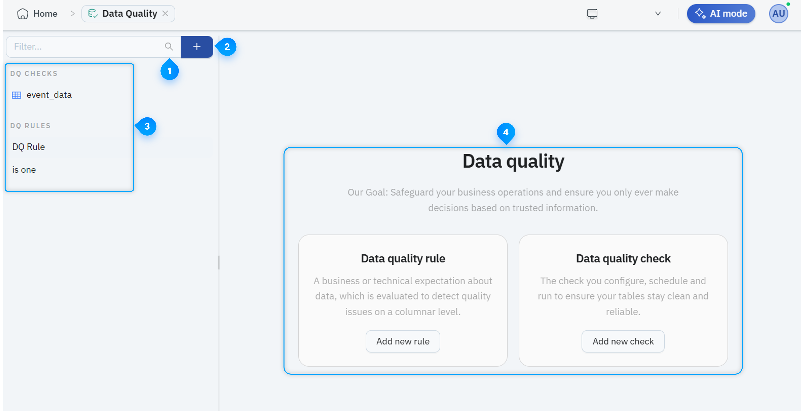

Data Quality
In this Topic
- Exploring the Data Quality UI
- Creating a Data Quality Rule
- Configuring a DQ Check
- Scheduling a DQ Check
- Configuring DQ Check Notifications
Exploring the Data Quality UI
The following image illustrates the Data Quality UI elements:

This image is for illustrative purposes only and does not represent real data.
The following table explains the Collection component UI elements:
| # | Component | Description |
|---|---|---|

|
Filter |
Enables you to enter a keyword and find a specific DQ Check or DQ Rule. |

|
+ (Add) |
Enables you to create a new DQ Check or DQ Rule. |

|
DQ Checks and DQ Rules panel | Displays the existing DQ Checks and DQ Rules. Select an item to view its configuration or results. |

|
Data Quality overview panel | Provides an overview of Data Quality and enables you to add a new DQ Rule or DQ Check. |
Creating a Data Quality Rule
A data quality rule defines the condition that Synergy uses to validate data. Each rule can accept one or more arguments and return a result indicating whether a record meets the defined condition.
To create a Data Quality Rule, do the following:
- Log in to Synergy.
- From the Open Workspace drop-down, select the relevant workspace. All available workspace components are displayed.
- Select Data Quality. The Data Quality page displays the existing DQ Checks and DQ Rules.
- To create a new DQ Rule, click the + (Add) icon beside the Filter bar and select Rule. The New Rule section is displayed.
- Enter a Name and Description for the rule.
- In the Label field, select the applicable data quality category. The available options are:
Field
Description
Completeness Checks whether the required data is present and not missing. Validity Checks whether the data follows the defined format, type, range, or business rule. Accuracy Checks whether the data correctly represents the expected real-world value. Consistency Checks whether the data remains uniform across fields, records, or related datasets. Uniqueness Checks whether the data contains duplicate values where each value must be distinct. - Click + Add argument and do the following:
- Enter a Name for the argument.
- From Allowed column types drop-down, select the data type that the argument supports.
-
In the Body field, enter the rule logic that Synergy must evaluate.
Info: Arguments represent the values that the rule requires during execution. An argument can reference a table field or accept a configured comparison value. You must select the correct data type for each argument. The available data type depends on the value that the argument accepts. For example, text, number, date, or Boolean.
-
In the upper-right corner, click Save. The new DQ Rule is displayed under DQ Rules in the DQ Checks and DQ Rules panel and is available when configuring a DQ Check or adding a Data Quality step to a pipeline.
Note: To delete a select the relevant DQ rule to open it and on the upper-right corner, click Delete.
Configuring a DQ Check
A table-level DQ check evaluates the data in a selected table and calculates data quality statistics using the configured rules and weights.
Use this option when you want to assess the current quality of a table without adding the check to a pipeline.
To configure a table-level DQ check, do the following:
- Log in to Synergy.
- From the Open Workspace drop-down, select the relevant workspace. All available workspace components are displayed.
- Select Data Quality. The Data Quality page displays the existing DQ Checks and DQ Rules.
- To create a new DQ Check, click the + (Add) icon next to the Filter bar and select Check. The New Check section is displayed.
- From the Table drop-down, search and select the table that you want to evaluate.
Note: Only the tables to which you have access are displayed.
- Click + Add column, and do the following:
- From the Rule drop-down, select the rule you want to apply.
- From the Column drop-down, select the table column that you want to evaluate.
- In the Success Criterion field, enter the minimum percentage of rows that must pass the rule.
- In the Weight field, enter the contribution of the rule to the overall DQ score.
- From the Severity drop-down, select the severity level for a failed rule.Note:
- You can add more columns and configure DQ checks for them.
- Ensure that the total weight of all configured rules equals 100.
- To remove a rule configuration, click the Delete icon at the end of the applicable row.
- On the upper-right corner, click Test run to validate the configuration and review the results before saving.
- (Optional) On the upper right corner, click Settings to configure a schedule or notifications.
- On the upper-right corner, click Save. The new DQ Check is displayed under DQ Checks in the DQ Checks and DQ Rules panel.
Note: You can only have one DQ check for a table. If a check already exists for the selected table, open and update the existing DQ check.
Scheduling a DQ Check
You can schedule a DQ Check to run automatically at defined intervals. Scheduling helps you monitor data quality regularly without starting each check manually.
Use the Schedule settings to define when Synergy runs the DQ Check and how it handles overlapping executions.
To schedule a DQ Check, do the following:
- Log in to Synergy.
- From the Open Workspace drop-down, select the relevant workspace. All available workspace components are displayed.
- Select Data Quality. The Data Quality page displays the existing DQ Checks and DQ Rules.
- Under DQ Checks, select the table which you want to schedule and click Settings on the right. The Check Settings pop-up is displayed.
- On the Schedule tab, in the Cron expression tab, click the three dots menu (...) and select the frequency after which the DQ Check should be executed. The selected frequency is displayed as a Cron expression in the Cron expression field.
- From the Overlap policy drop-down, select the required Overlap Policy. The following overlap policies are available:
Overlap Policy
Description
Skip Skips the DQ Check execution. Buffer One Executes the DQ Check as soon as the current check is completed. This will buffer only one existing pipeline. Buffer All Executes the DQ Check after all the scheduled checks are executed sequentially. Cancel Other Cancels the already running DQ Checks and then executes the current DQ Check after the cancellation is completed. - Click Apply. The DQ Check is applied to the selected table and verifies the quality based on the selected cron expression.
Configuring DQ Check Notifications
You can configure notifications for a DQ Check to inform selected recipients about the check results. The notification settings apply to the current DQ Check and the table configured for that check.
Use the Notifications settings to define when notifications are sent, where they are delivered, and what information they contain.
To configure notifications whenever a scheduled DQ Check is executed, do the following:
- Log in to Synergy.
- From the Open Workspace drop-down, select the relevant workspace. All available workspace components are displayed.
- Select Data Quality. The Data Quality page displays the existing DQ Checks and DQ Rules.
- Under DQ Checks, select the table to which you want to configure notifications and click Settings on the right. The Check Settings pop-up is displayed.
- In the Check Settings pop-up, do the following:
Field
Description
Labels Enter the text and select it to add it as a label.
Labels are displayed in the Notification alerts and help in quickly identifying the notification.
Destinations Select the destination from where you want to host the notification.
Subject Template Enter the subject line for the notification. Message Template Enter the message to include in the notification.
- Click Apply. The Notification settings is applied to the selected table.